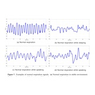

Detection of Abnormal Respiration from Multiple-Input Respiratory Signals SENSORS (MDPI), 2020
- Ju O Kim
- Deokwoo Lee Keimyung University

Abstract
We propose Z-domain and filter-based approaches for detecting abnormal respiration from single and multiple UWB radar signals with 93% accuracy. The method combines time-domain and frequency-domain analysis for robust detection. Ultra-wideband (UWB) radar technology has emerged as a promising non-contact method for respiratory monitoring. This paper presents a novel approach that processes multiple respiratory signals simultaneously using advanced signal processing techniques. By employing Z-domain transformation and sophisticated filtering methods, our system can effectively distinguish between normal and abnormal breathing patterns, including apnea events, with high accuracy. The proposed method demonstrates robust performance across various experimental conditions and shows potential for real-world applications in healthcare monitoring and sleep disorder detection.
Detection Pipeline

The detection flowchart above illustrates our comprehensive signal processing pipeline for abnormal respiration detection. The system uses a single Novelda X4 UWB radar sensor positioned 30-50 cm from the chest, with multiple signal acquisitions for improved accuracy. The core processing stages include Z-domain transformation for feature extraction, custom filter design for signal enhancement, and multi-input fusion for robust classification. This systematic approach ensures reliable detection performance across various environmental conditions and patient positions.
Multi-Input Signal Processing
Our approach acquires multiple respiratory signal samples from a single UWB radar sensor to improve detection reliability. The signals are processed using Z-domain transformations to extract relevant features, followed by custom-designed high-pass filters to enhance the signal-to-noise ratio. The system employs both time-domain and frequency-domain analysis to accurately detect abnormal breathing patterns, including apnea events. The multi-input architecture provides redundancy and improves overall detection accuracy from 67% (single input) to 93% (triple inputs).
Z-Domain Analysis

The Z-domain transformation enables effective feature extraction from respiratory signals by converting time-domain signals into a representation that emphasizes periodic patterns and breathing rate characteristics. The classification results shown above demonstrate how different respiratory states (normal breathing, shallow breathing, and apnea) form distinct clusters in the Z-domain feature space. This separation facilitates accurate classification using relatively simple decision boundaries, achieving up to 93% accuracy with triple inputs in distinguishing abnormal respiration patterns. The Z-domain approach is particularly robust to signal amplitude variations and provides consistent performance across different subjects.
Filter-Based Enhancement

Custom-designed filters play a crucial role in enhancing respiratory signals and suppressing noise from body movements and environmental interference. The filter response characteristics shown above illustrate how our filter bank selectively amplifies frequency components corresponding to normal and abnormal breathing patterns while attenuating out-of-band noise. The combination of bandpass filtering in the respiratory frequency range (0.1-0.5 Hz) with adaptive notch filters for interference rejection enables robust signal extraction even in challenging real-world conditions. This filter-based approach complements the Z-domain analysis by providing clean input signals for feature extraction.
Citation
Acknowledgements
This research was supported by Keimyung University. We thank the reviewers for their valuable feedback and suggestions.
The website template was borrowed from Michael Gharbi and Jon Barron.